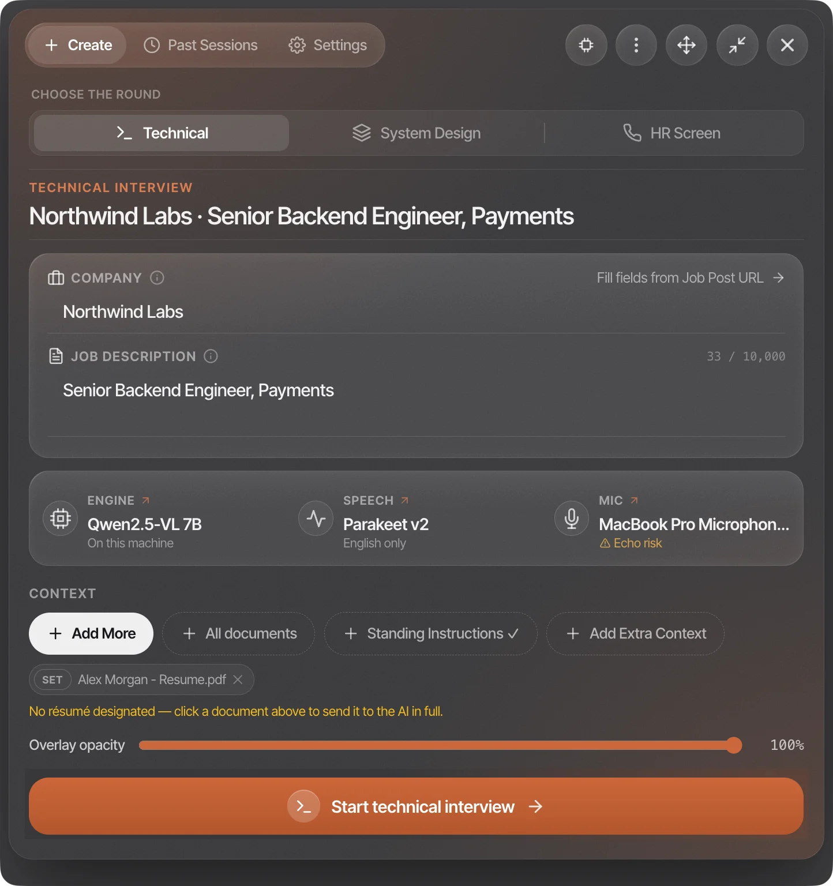
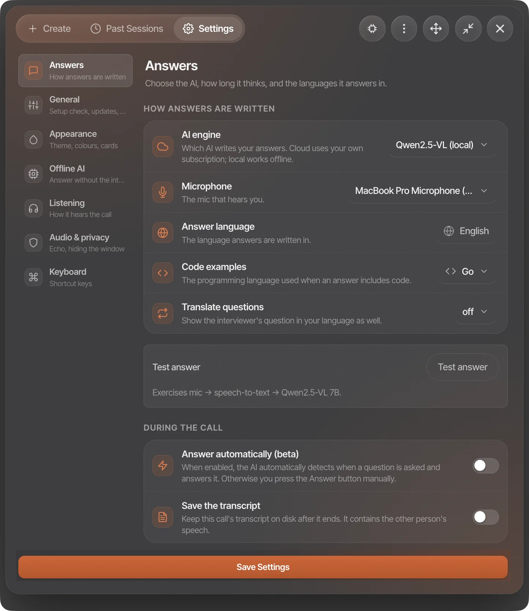
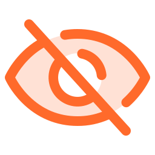
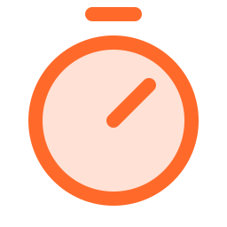
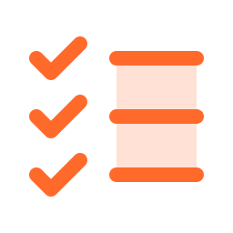

Them“How would you keep a write-heavy Postgres table fast past a billion rows?”
YouAt that scale we can’t treat it as one giant table anymore — partition it, and cut the index count.
answer ready in 1.52s
Works on any call
ZoomGoogle MeetTeamsWebexAnything with sound
How it works
How it works
You set it up once before the call. After that it just listens.
Tell it where you are interviewing
Add the company, the job description and the type of round: technical, system design or HR. The answers change with the round.
Start the session
Your mic and the interviewer's audio are recorded separately, so it knows who said what.
It answers when the question ends
Automatically when they stop talking, or when you press ⌘↵. It repeats the question first so you can check it heard it right.
Your share stays clean
The window is left out of screen capture, so the other side only sees your normal screen.
Before the call
Answers based on your background
Add the company and the role and the answers are tailored to them. If you attach your résumé, the whole CV is used, so “tell me about yourself” goes through your jobs in order instead of picking a few.
Other documents work differently. They're indexed on your computer and only the parts that match the current question are used, so a long handbook doesn't get in the way.

System design rounds
Diagrams for system design
In system design rounds it draws the architecture next to the answer. The drawing is a separate request, so the spoken answer still shows up in about two seconds while the board fills in beside it.
It starts with the five to seven main components, grouped into tiers, and keeps the rest greyed out until you need them. Hover over a box to see what it's for. The main request path is numbered on the arrows and listed along the bottom, so you can walk through it in order. Ask for a change and it draws a new version; the old ones stay one click away.
The whole interface
Three buttons and a clock
From the bar on top you can answer what it just heard, answer about your screen, or type a question. The strip under it shows what it's hearing, phrase by phrase. The two icons on the left mute either side. The red timer is how long you've been on the call; click it twice to end the session and free up memory.
Under the hood
Local where it counts
Speech recognition uses NVIDIA's Parakeet model and runs on your computer. v2 is the default: English only, and better with technical terms. v3 supports 25 languages.
Your documents are searched on your computer too. Nothing is uploaded to a cloud index.
SpeechParakeet TDT 0.6B · v2 / v3
Runs onApple MLX on Mac · sherpa-onnx on Windows
LanguagesEnglish (v2) · 25 (v3)
RetrievalDense + BM25, RRF-fused
Embeddingsgte-small · 384-dim · local
Per questionTop 6 passages
Your résuméSent whole, never sampled
Audio uploadedNone, ever
Look and feel
Five themes on frosted glass
On a Mac the dashboard is real frosted glass: whatever is behind the window shows through, blurred. Pick one in Settings, under Appearance.
Settings
Change how it answers
Choose the model, how long answers are and how much it thinks before it starts. Every shortcut can be rebound: click it and press the new keys.

Details
Features
Most of these were added after something went wrong in a real interview.
Hears both sides
Your mic and the interviewer's audio are captured separately, so it knows who asked the question.

Invisible to screen sharing
The window is left out of screen capture. We tested it with the same capture system Zoom, Meet and Teams use, and it doesn't show up.

Answers in about 1.5s
A session stays ready between questions, and the default model was chosen because it starts answering fastest.
Reads your screen
Take a screenshot of the task and ask about it. You can take several, for example two windows or a long file.
Speech stays on your computer
Transcription runs locally: v2 for English, v3 for 25 languages. Audio is never uploaded, and nothing is saved unless you turn on transcript saving.
Knows your documents
Add notes, a spec or a company handbook. They're indexed on your computer and only the relevant parts are used for each question.

Tracks multi-part questions
"How would you design it, what breaks first, and how would you monitor it?" becomes three chips, and each one ticks off once you've covered it.
Sees the follow-up coming
One click on Follow-ups lists the two or three questions the interviewer is most likely to ask next, each with a line you can say back.
Bookmarks for later
Press ⌘⌥M when an answer went badly. The moment is saved with the session, so you know what to practise afterwards.
Install
One command
Paste this into Terminal. It downloads the latest version, checks its signature, installs it and opens it.
Paste this into PowerShell. Windows will say the publisher is unknown because the installer isn't signed. Click More info, then Run anyway. Read the script first if you want.
Without a code-signing certificate the script can't prove who built the file. It checks that the download is complete and prints its SHA-256 so you can compare it with the release page.
Apple Silicon (M1 or later). There is no Intel build.
macOS
macOS 14 or later.
Disk
About 2 GB, plus 3–5 GB if you run a language model locally.
Memory
16 GB recommended when running a model locally.
Windows
x64, Windows 10 or later. Works on ARM laptops through emulation, but speech recognition falls back to Whisper there. Updates itself.
FAQ
FAQ
Can the interviewer see it?
Not in a screen share. The window is left out of screen capture, and we checked it with the same capture system Zoom, Meet and Teams use: with protection on, the overlay isn't in the frame at all. It's on by default, and you'll see a banner if you turn it off. It won't hide the app from someone sitting next to you.
Does my audio leave my computer?
Your audio doesn't. Speech recognition always runs on your computer. The answer comes from whichever engine you choose. By default that's the Claude Code CLI on your own subscription, so the question and part of the transcript go to Anthropic. If you'd rather nothing left your computer, switch to the built-in local model. The app always shows which engine is active.
Do I need an API key or a subscription?
No. If you have the Claude or Codex CLI installed and signed in, Phoenix uses it. If not, it uses the local model instead, and everything still works.
Is anything recorded?
Transcripts are only saved if you turn on “save transcript” for a session, and it's off by default, since it includes the other person's voice. Screenshots are deleted after the answer.
macOS says the app is “damaged”. Is it?
No. Phoenix isn't signed with a paid Apple certificate, and “damaged” is what macOS says about unsigned apps downloaded in a browser. Files downloaded with curl don't get that flag, which is why the Terminal command works.
Why do I grant permissions again after every update?
Because the app isn't signed, macOS treats every new version as a different app, so you need to allow Microphone and Screen Recording again. The troubleshooting guide shows how to clear the old entry.
Try it before your next interview
It takes about a minute to install and there's no account. If you'd rather nothing left your computer, switch to the local model and it works offline.